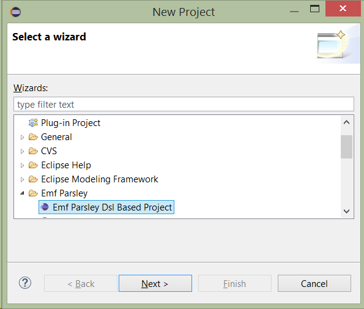

Emf Parsley is a lightweight framework that allows easy and quick UI development upon EMF. EMF Parsley is built from EMF Edit framework features like Tree, Form and Table builders with standard JFace databinding, providing a complete component-based toolset. Moreover a DSL allows to customize several behaviors in each component and can be configured to use all kinds of EMF persistence implementations (XMI, Teneo, CDO).
EMF Parsley aims to provide a complete set of block components to visualize your model with the introspective EMF capabilities and can be used to easily build forms, viewers or editors.
There are some components that can be used out-of-the-box and can be considered as a reference implementation of the mechanisms that are the bases of Emf Parsley itslef.
The main feature of EMF Parsley is that you can customize all basic UI behaviours of the components with Injection mechanism (based on Google Guice). You can get more info in the , but you don't have to know all details about the internal implementation to inject your own customization because Emf Parsley provides a DSL to easy customize your UI, as explained in the next section.
You can use the DSL by creating a new project with the wizard "Create a new project" -> "EMF Parsley DSL Based project"

Clicking the "Finish" button the wizard will open directly the dsl editor. You can use the content assistant to discover all features.

The DSL allows to customize the most relevant behaviors, currently the following are permitted:
The purpose of this first example is to make use of the classical EMF Library Model example and create a view for editing such models using an EMF Parsley enabled plug-in.
So let's start by creating the model plug-in with
You will end up with three plug-ins:
Please consider that here we are starting from this well known EMF model taken out-of-the-box from Eclipse, but you can start from your EMF model (in that case you may probably omit the ".edit" and ".editor" plugins, depending on your model).
Now you can create your first example with the appropriate wizard.
The generated project has some classes and a module.parlsey file, which opens automatically. Just type the following content into the {} block (note that context assist is available)
parts {
viewpart org.eclipse.emf.parsley.examples.firstexample.view.library.treeform {
viewname "My Library Tree Form"
viewclass
}
}
Here above we have just declared a view part with
So there is still an error, in fact we need to create the declared class. Suggestion: Just copy the above qualified class name ("org.eclipse.emf.parsley.examples.firstexample.views.LibraryTreeFormView"), select the project, right-click and select File -> New -> Class. Now paste the clipboard content into "Name:" field: the package and class name will be automatically splitted into right fields. Then click "Finish".
Now modify the view class code with this content:
import org.eclipse.emf.parsley.views.AbstractSaveableTreeFormView;
import org.eclipse.emf.common.util.URI;
public class LibraryTreeFormView extends AbstractSaveableTreeFormView {
protected URI createResourceURI() {
return URI.createFileURI( System.getProperty("user.home") + "/MyLibrary.library" );
}
}
Now get back to module.parlsey file, go just after "viewclass" keyword, type "LibraryTreeFormView" and Ctrl-Space: the content assist will set automatically the correct qualified name
viewclass org.eclipse.emf.parsley.examples.firstexample.views.LibraryTreeFormView
when you save the above file you will notice that a new file ("plugin.xml_emfparsley_gen") is generated into the root folder of your project. Just copy this file into "plugin.xml".
Let's focus briefly on the above createResourceURI() method: our goal is allowing to manage a library model instance which persists on a EMF Resource. In this example we choose to use the EMF default persistence (XMI), but you can provide any URI (e.g. using Teneo, CDO or any other EMF Resource Persistence implementation) In particular here we choose to persist the Resource in a XMI file named "MyLibrary.library" into the user home folder (you might want to change it with any other path).
We need a Dependency from the model plug-in: so open MANIFEST.MF file, go to Dependencies tab, press "Add..." button in "Required Plug-ins" section and insert "org.eclipse.emf.examples.library" among dependencies.
Before executing this code we need to do some little more work in order to initialize the Resource.
An easy way to overcome this issue can be the following:
public Class<? extends EmptyResourceInitializer> bindEmptyResourceInitializer() {
return LibraryEmptyResourceInitializer.class;
}
import org.eclipse.emf.parsley.resource.EmptyResourceInitializer;
import org.eclipse.emf.ecore.resource.Resource;
import org.eclipse.emf.examples.extlibrary.EXTLibraryFactory;
import org.eclipse.emf.examples.extlibrary.Library;
public class LibraryEmptyResourceInitializer extends EmptyResourceInitializer {
public void initialize(Resource resource) {
super.initialize(resource);
Library library = EXTLibraryFactory.eINSTANCE.createLibrary();
resource.getContents().add(library);
}
}
The method initialize() will be executed only when the Resource is empty
(i.e., it has no contents).
now get back to the MANIFEST.MF and run the example

As an Eclipse RCP developer you know, of course, that this will start another Eclipse instance (unless you add an Application plug-in to the launch or define an Application in the current plug-in).
In this second Eclipse instance you can show the View in this way:

With this simple view you can start editing the model instance. For example you can set the "name" field; as soon as you start typing characters into this field you will notice that:
if you now perform a "Save" action the persistence mechanism will trigger and you will see that file
<user.home>/MyLibrary.libraryis being created on the file system. From now on, this file will keep the state of the model object whenever you change and save it.
To create a Writer into the Library just right-click on the Library object and select New Child -> Writer

Please note that you might see a slightly different content in the above context-menu in case you deleted the .edit plugin when creating the model (e.g. "Writers Writer" instead of "Writer", "Stock Book" instead of "Book" and similar (this is because with EMF it is possible to customize labels also via .edit plugin).
Now set for instance the writer "name" field and save. Now just play around creating Books, associating them to Writers and so on. As you can see you can entirely manage the EMF model instance: creating, modifying and deleting elements.
Whenever the current selection on the upper side of the view changes, then the lower side shows the detail of this selection.
However, up to this point, you have no control over the field to be shown and its order; for example you may want just the "name" attribute for the Library and "name", "address" and "books" attributes for Writers and maybe "title", "authors" and "category" for Books.
Well, it's indeed very easy to obtain this: just edit the module.parsley file, adding the following import (without ending line with ";")
import org.eclipse.emf.examples.extlibrary.*
and then defining the features to show
module ... {
parts {
...
}
featuresProvider {
features {
Library -> name
Writer -> name, address, books
Book -> author, title, category
}
}
}
Remeber that code completion is available, just exploit it since it helps a lot.
If you restart now the application you will see that, when selecting an object, only the declared attributes will be shown. Furthermore, they are shown in the specified order.
Did you run the application in Debug mode? Well, then you can change fields and order, save and see the changes without even restarting the application.
Do you want to change text used for attribute labels in the detail? Just add the following:
propertyDescriptionProvider {
text {
Book : author -> 'Wrote by:'
Writer : name -> 'Name:'
}
}
Or do you want to change the label shown on the tree nodes on the upper side and as detail title? Maybe want to format the book label like this?
labelProvider {
text {
Book b -> '"' + b.title + '"' +' (by '+ b.author.name + ')'
}
}

This section describes the components that are provided to be used out-of-the-box, that are the foundations for all parts built upon Emf Parsley. Afetr a brief description, for each component we present a set of customizations, just to get an idea of how it works. You can refer to Customization Section for a complete list.
The Form Component can be used to rapresent an EObject (src) in a row-oriented form, like in the image above.

EMF Parsley provides a factory that can be used to create such a component, like in the code below. Here you can see that can be configured only in 2 lines, the constructor phase and the build&fill phase.
@Inject FormFactory formFactory; (...) formComposite = formFactory.createFormDetailComposite(parent, SWT.NONE); formComposite.init(eObject);
Most of the job is done by the second line of code, that get the list of EStructuralFeature (src) defined for the EClass (src) (that is the type of the object to rapresent) and builds a row for each of them. Each row is composed by a label with the name of the feature and a control to access the data.
All these aspect can be customized in many way, for example feature list, the labels and the controls.
The list fo feature displayed on the form can be customized via the Feature Provider to select the features or the order.
The description on the left side of the form caan be customizzed via the Caption Provider.
Otherwise to customize the controls on the right, you can use the Form Control Factory.
Depending on the feature types, can be some fields that use predefined values (e.g. combo). You can provide the exact proposal list via the Proposal Provider.
The Tree Component provides a tree rapresentation of data that can be feeded with an EResource, a Resource URI, and a simple EObject. This component use the EMF Meta-Model information to display objects in the tree.

EMF Parsley provides an initializer that can be used to create such a component, like in the code below. Here you can see that can be configured only in 2 lines, the constructor phase and the build&fill phase.
@Inject ViewerInitializer viewerInitializer; (...) treeViewer = new TreeViewer(parent); viewerInitializer.initialize(treeViewer, element);
The Tree Componentcan be customized in several way via the standard EMF Edit facilities or with the EMF Parsley codeinjection based mechanism. If you are familiar with Jface APIs, you can easily use the basic class with some facilties to define the specific implementation. See the corrisponding sections for more details.
An IContentProvider is used in Jface to retrieve the list of elements and children to be showed in the tree viewer. The Viewer Content Provider is the EMF Parsley implementation of that interface, and by default uses the containment mechanisms to provide children as in EMF Edit framework, but it can be customized as weel.
The Viewer Label Provider is the implementation ov a ILabelProvider interface and is responsible to provide the text and image rapresentation for each EObject visualized.
The contextual menu can be added to the viewer via the ViewerInitializer, as explained in the Menu section The Menu Builder allow to fully customize the contextual menu.
The Tree Form Component contains a that provides a tree rapresentation of data that can be feeded with an EResource, a Resource URI, and a simple EObject. This component use the EMF Meta-Model information to display objects in the tree. The component also combines a detail that display the current selected object.

EMF Parsley provides a factory to create such a component.
@Inject TreeFormFactory treeFormFactory; (...) treeFormComposite = treeFormFactory.createTreeFormComposite(parent, SWT.BORDER); treeFormComposite.update(application);
Since Tree Form Component is a combination of Tree Component and Form Component, all their customizations are avaible for it.
The Table Component can rapresent data in a grid, once you have specified what kind of object need to be rapresented. It uses metamodel infos to build column as needed.

@Inject ViewerFactory viewerFactory; (...) tableViewer = viewerFactory.createTableViewer(composite,SWT.BORDER | SWT.FULL_SELECTION, object, eClass);
The class TableViewerColumnBuilder (src) has the responsability to build the columns of the Table, by using the Features Provider to get the list of features and the Feature Caption Provider for the captions. The class TableColumnLabelProvider (src) can be used to specify an implementation of ILabelProvider for each column.
The list fo feature displayed on the form can be customized via the Table Feature Provider to select the features or the order.
The description on the left side of the form can be customizzed via the Caption Provider.
The contextual menu can be added to the viewer via the ViewerInitializer, as explained in the Menu section The Menu Builder allow to fully customize the contextual menu.
In this chapter we will describe how EMF Parsley let you customize the standard behaviours. A DSL is provided to easily customize most common feature, but you can customize all aspect by doing manually. As a matter of fact each customization is explained in a single section, with the details on the DSL (if available) and the class for overriding by Java.
As we deeply explained in the , if you wnat to provide a specific implementation via Java, you can use the Google Guice injection mechanism, buy overriding the specific class with your own implementation. Note that an explicit contructor is needed, with the @Inject annotation to make Guice correctly works.
The Label Prorvider as in JFace allows to specify the representation of a given Object. EMF Parsley provides an implementation that uses the information provided via the DSL, as you can see in the snippet below.
labelProvider{
text{
Book -> "Book:"+title
Borrower -> "Borrower: "+firstName
}
image{
Book -> "book.png"
}
}
However if you wnat to use your own implementation, you can do that by providing a specific implementation of ILabelProvider and injecting it in the spefic module (TODO). EMF Parsley provides such an implementation with the class ViewerLabelProvider (src) that is inteded to be surclassed by the programmer to provides specific implementations like in the example below.
public class CustomLibraryLabelProvider extends ViewerLabelProvider {
@Inject
public CustomLibraryLabelProvider(AdapterFactoryLabelProvider delegate) {
super(delegate);
}
public String text(Book book) {
return "Book: " + book.getTitle();
}
public String image(Book book) {
return "book.png";
}
public String text(Borrower b) {
return "Borrower: " + b.getFirstName();
}
}
As in Jface, the Content Provider is used to get the elements to represent and for tree their children. EMF Parsley provides an implementation that uses the DSL as in the code below.
viewerContentProvider{
elements{
Library -> books
}
children{
Library -> books
Book b-> {
new ArrayList()=>[
add(b.author)
addAll(b.borrowers)
]
}
}
}
The developer can also provide a specific implementation of IContentProvider by injecting it in the spefic module (TODO). EMF Parsley provides an implementation with the class ViewerContentProvider (src) that can be easily used to specify the children of all object on the tree, like in the example below.
public class CustomLibraryViewerContentProvider extends ViewerContentProvider {
@Inject
public CustomLibraryViewerContentProvider(AdapterFactory adapterFactory) {
super(adapterFactory);
}
public Object elements(Library library) {
return library.getBooks();
}
public Object children(Library library) {
return library.getBooks();
}
public Object children(Book book) {
ArrayList<Object> children = new ArrayList<Object>();
Writer author = book.getAuthor();
if (author != null) {
children.add(author);
}
children.addAll(book.getBorrowers());
return children;
}
}
EMF Parsley uses thi kinf of provider wherever a list of feature is requested for a certain EClass. The default is to return the list of all the features in the EClass, but the programmer can customize it (for instance, by returning only a superset, or using a different order) on an EClass-based strategy. Thus you can use the DSL to specify that list, as in the snipped below.
featuresProvider{
features{
Book -> title, author, category, pages
}
}
If we look at Java, there are more chances to customize this behaviour, but we need to go deep in some details of the Feature Provider implementation.
When the framework builds components according to the EStructuralFeature (src)s of a given EClass (src) it relies on an injected FeaturesProvider (src). The default behavior is to simply return all the features of the a given EClass, in the order they are defined in the EClass, as implemented by the method defaultFeatures in FeaturesProvider (src).
You can set the mappings, i.e., specify the structural features you want to be used given an EClass, by implementing the method buildMap, which receives the FeaturesProvider.EClassToEStructuralFeatureMap (src) that can be filled with the method mapTo; for instance, using the EMF extended library example, this customization will return only the name and address features for Library, the firstName, lastName and address for Person, and the firstName, lastName and books (but not address) for Writer (which inherits from Person).
import static org.eclipse.emf.examples.extlibrary.EXTLibraryPackage.Literals.*;
import org.eclipse.emf.parsley.ui.provider.EStructuralFeaturesProvider;
public class LibraryEStructuralFeaturesProvider extends
FeaturesProvider {
@Override
protected void buildMap(EClassToEStructuralFeatureMap map) {
super.buildMap(map);
map.mapTo(LIBRARY,
LIBRARY__NAME, ADDRESSABLE__ADDRESS);
map.mapTo(PERSON, PERSON__FIRST_NAME, PERSON__LAST_NAME, ADDRESSABLE__ADDRESS);
map.mapTo(WRITER, PERSON__FIRST_NAME, PERSON__LAST_NAME, WRITER__BOOKS);
}
}
Another possibility is to build a map which relies on Strings both for the EClass (src) and for the list of EStructuralFeature (src); note that the name of the EClass (src) should be obtained by using getInstanceClassName(); you can also combine the two approaches.
The FeatureCaptionProvider (src) provides captions for the features in Tables and Forms. Here you can see an example of the DSL.
featureCaptionProvider{
text{
Book:author -> "Wrote by:"
Writer:name -> "Name:"
}
}
The FeatureCaptionProvider (src) provides captions for the features. It can be customized, with injection (see Injection paragraph), to customize the caption label on the left of each control in a form and the headers in a table's columns. The framework use a polimorphic mechanism to find customizations, so that It can be written a method with a specific signature build by the keyword 'text' followed by the EClass and the EStructuralFeature. All parts of the name are separated by an underscore character and the method must accept a parameter of type EStructuralFeature.
In the following example we specify the caption text for the feature 'Author' of Book and the feature 'Name' for Writer.
public String text_Book_author(final EStructuralFeature feature) {
return "Wrote by:";
}
public String text_Writer_name(final EStructuralFeature feature) {
return "Name:";
}
Some controls use a list of proposal to help the end user experince: for example the combo box has a list of proposal, but also the simple text can use the proposal to assist and correct the hand-writed values. For each feature it can be specified a list of proposals via the DSl.
proposals{
Book:author -> {
defaultProposals(feature).
filter(Writer).
filter[name.startsWith("F")].toList
}
}
This customization can be done also in Java, by extending the class ProposalCreator (src) and implementing the method
public List<?> proposals_Book_author(Book book) {...}
.
Contextual menu can be added to any viewer by usinf the ViewerInitializer (src).
@Inject ViewerInitializer viewerInitializer; (...) treeActionBarContributor.initialize(editingDomain); viewerInitializer.addContextMenu(treeFormComposite.getViewer(), treeActionBarContributor, editingDomain, this); treeFormComposite.getViewer().addSelectionChangedListener(treeActionBarContributor);
EMF Parsley logically separate the menu into 2 parts. The first section contains all common edit commands such as copy and paste. The second section regards EMF specific commands, such as for example new child. You can use the DSL to fully customize the menu, as in the example below.
menuBuilder{
menus{
Library-> #[
submenu("Edit",#[
actionCopy,
actionCut,
separator,
actionPaste
])
]
}
emfMenus{
Library -> #[
actionAdd("Add a new book", books,
EXTLibraryFactory.eINSTANCE.createBook => [
title="new book"
]
)
]
}
}
You can customize menu also via Java, by extending the EditingMenuBuilder (src).
EMF Parsley let you customize the form controls via the DSL as in the following example.
formControlFactory {
control {
Library : name -> { }
Writer : books ->
createLabel(
books.map[title].join(", "))
Writer : name -> { createLabel(parent, "") }
target { observeText }
Writer : firstName ->
toolkit.createLabel(parent, "")
target observeText(SWT::Modify)
Borrower : firstName -> {
createText(firstName, SWT::MULTI, SWT::BORDER,
SWT::WRAP, SWT::V_SCROLL)
}
}
}
If you want to customize the controls on the detail via Java, you can extend the class FormControlFactory (src). Using the same polimorphic mechanism of the labels, the programmer can write a method with the keyword 'control' followed by the EClass and EStructuralFeature undescore-character-separated. In the signature of the method must be both the DataBinding Context and the Feature Observable that can be used for databinding.
public Control control_Writer_name(DataBindingContext dbc,IObservableValue featureObservable) {
//Creating the control
Text text = getToolkit().createText(getParent(), "");
text.setData(FormToolkit.KEY_DRAW_BORDER, FormToolkit.TREE_BORDER);
text.setBackground(getToolkit().getColors().getColor(IFormColors.TITLE));
//Binding the control to the feature observable
dbc.bindValue(SWTObservables.observeText(text, SWT.Modify), featureObservable);
return text;
}
If you want to customize controls in Dialog, you can use the specific DSL section dialogControlFactory:
dialogControlFactory {
control {
...
}
}
Instead of using the Extension Point mechanism, EMF Parsley leverages from DSL and Google Guice Injection.
Because of this, it is very easy to use it with Eclipse 4.x (e4).
If you followed the steps described in section First Example you will have already what we need to begin. Otherwise the following wizard will bring you to that point.
You will end up with three plug-ins:
As a reminder, in section First Example we reached the point where we launched a second Eclipse instance (but, of course, just defining a product you could have a standalone 3.x application) with a view (called "My Library Tree Form") that allowed to manage the model.
What we will do now is starting from the previous step and create an e4 Application (on top of the previous plug-ins) that gets to the same result, but now with a pure e4 Part.
In order to do this we need to export the "org.eclipse.emf.parsley.examples.firstexample" package from the first plug-in.
Now let's create a new, empty, e4 application, e.g. "org.eclipse.emf.parsley.examples.firstexample.application" (you can find details on how to create e4 applications in our tutorials).
Create a Part and ensure that the application starts.
In the just created plug-in we need dependencies from the previous plug-ins: so open the org.eclipse.emf.parsley.examples.firstexample.application/MANIFEST.MF file, go to Dependencies tab and add the three previous plug-ins. Add also "org.eclipse.emf.parsley" plug-in. Don't forget to add the previous, and the required plug-ins, also to the Product.
Open the Part java class and make the following changes:
// Use these imports during Organizing Imports operation
import org.eclipse.emf.common.util.URI;
import org.eclipse.emf.ecore.resource.Resource;
import org.eclipse.swt.widgets.Composite;
// The part implements IMenuListener for context menu handling
public class MyEclipse4Part implements IMenuListener
//the parent composite
private Composite parent;
//the EMF Parley composite for showing a tree and a detail form
private TreeFormComposite treeFormComposite;
//the EMF Resource
private Resource resource;
//Guice injected EMF Parsley component for contributing to the tree context menu
private TreeActionBarContributor treeActionBarContributor = FirstexampleActivator.getDefault().getInjector()
.getInstance(TreeActionBarContributor.class);
//Guice injected EMF Parsley factory for the tree detail form
private TreeFormFactory treeFormFactory = FirstexampleActivator.getDefault().getInjector()
.getInstance(TreeFormFactory.class);
//Guice injected EMF Parsley Resource loader
private ResourceLoader resourceLoader = FirstexampleActivator.getDefault().getInjector()
.getInstance(ResourceLoader.class);
//Guice injected EMF Parsley editing domain
private AdapterFactoryEditingDomain editingDomain = FirstexampleActivator.getDefault().getInjector()
.getInstance(AdapterFactoryEditingDomain.class);
//Guice injected viewer initializer
private ViewerInitializer viewerInitializer = (ViewerInitializer) FirstexampleActivator.getDefault().getInjector()
.getInstance(ViewerInitializer.class);
//Guice injected save manager
private ResourceSaveManager resourceSaveManager = FirstexampleActivator.getDefault().getInjector()
.getInstance(ResourceSaveManager.class);
//URI for EMF Resource
private URI uri = URI.createFileURI(System.getProperty("user.home")
+ "/MyLibrary.library");
Modify the @PostConstruct method with this code:
@PostConstruct
public void postConstruct(Composite parent) {
this.parent = parent;
// Initialize TreeFormFactory & ResourceLoader
init(treeFormFactory, resourceLoader);
// Prepare the menu action bar contributor upon the selection
treeFormComposite.getViewer().addSelectionChangedListener(treeActionBarContributor);
}
and add the following methods:
public void init(TreeFormFactory treeFormFactory, ResourceLoader resourceLoader) {
//create the tree-form composite
treeFormComposite = treeFormFactory.createTreeFormMasterDetailComposite(parent, SWT.BORDER);
//load the resource
resource = resourceLoader.getResource(editingDomain, uri).getResource();
//update the composite
treeFormComposite.update(resource);
//initialize and bind the context menu to the tree-form composite
treeActionBarContributor.initialize(editingDomain);
viewerInitializer.addContextMenu(
treeFormComposite.getViewer(), treeActionBarContributor, editingDomain, this);
}
@Override
public void menuAboutToShow(IMenuManager manager) {
treeActionBarContributor.menuAboutToShow(manager);
}
If you now run the application you will be able to manage the model:

but you will notice that it is not possible to persist the changes to the model.
In order to allow persisting the model changes we have to add the dirty state handling to the part and the Save command to the application. Let's start with adding the following attribute to the part
@Inject MDirtyable dirtyable;
initialize it in the @PostConstruct method
@PostConstruct
public void postConstruct(Composite parent, MDirtyable dirtyable) {
this.dirtyable = dirtyable;
this.dirtyable.setDirty(false);
add to init method the following code in order to update the dirty state
editingDomain.getCommandStack().addCommandStackListener(
new CommandStackListener() {
public void commandStackChanged(EventObject event) {
if (dirtyable != null)
dirtyable.setDirty(true);
}
});
and add the @Persist method, which will be called when the part is saved
@Persist
public void save(MDirtyable dirty) throws IOException {
if (resourceSaveManager.save(resource)) {
if (dirty != null) {
dirty.setDirty(false);
}
}
}
and, in the end, add the Save handler along with the correspondent Command and Menu (you can find how to create handlers, commands and menus in an e4 applications in our tutorials)
public class SaveHandler {
@Execute
void execute(EPartService partService, @Named(IServiceConstants.ACTIVE_PART) MPart part) {
partService.savePart(part, false);
}
}